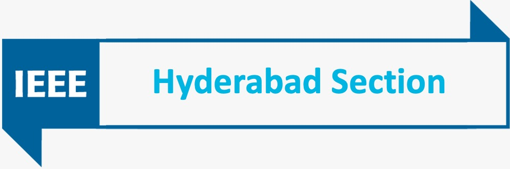
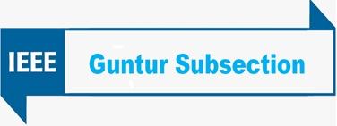

Organized by
School of Electronics Engineering
VIT-AP University,
India
In association with
IEEE, Hyderabad Section
 IEEE conference ID--Conf:53593
OBJECTIVE
AISP’24 –Fourth International Conference being organized by the Vellore Institute of Technology, Andhra Pradesh. The focus of this forum is to present the latest developments in the area of Artificial Intelligence and Signal Processing and bring together the researchers and practitioners, from both academia and industry. The conference is also intended to publish visionary papers with unique, and novel contributions so that the innovations in this aspect are further accelerated. Papers may present advances in the theory, design, implementation, analysis, and verification, or empirical evaluation, applications of AI and Signal Processing in the design and development of State-of-Art technology.
Artificial Intelligence
Artificial Intelligence uses computing technologies that makes machines to see, hear, talk, think, learn, and provide solutions to the problems. These technologies uses searching, planning, learning, knowledge representation, analysing, reasoning, natural language processing, automation, robotics and perception, multiagent systems, applied statistical learning, and deep learning to develop new applications.
Signal Processing
In recent years, our everyday lives rely on computers, radios, video, cell phone which are enabled through signal processing. Signal processing is the heart of today’s technology without which we are unable to share the information. Signal processing has very vast and interdisciplinary applications extending from engineering to medical science. It has immense role to provide exponential growth in the field of digital system, microchip, speech, image, and video processing, medical application, computer hardware, and biosensor.
Topics of Interest
Topics of interest include, but are not limited to:
Artificial Intelligence
Signal Processing
Communication
Submission Guidelines
Paper submissions should be limited to a maximum of five (5) pages. Submissions longer than 5 pages will be charged additionally (INR 2500 per page). All submissions will be blind reviewed by the Program Committee on the basis of technical quality, relevance to scope of the conference, originality, significance, and clarity.
Manuscripts must be submitted electronically in online submission system. For any questions, please contact with bappadittya.roy@vitap.ac.in.
Proceedings
Accepted and presented papers can be published by AISP Conference Proceedings, which will be indexed by Scoups and Ei Compendex after conference.
AISP 2022, ISBN: ___-_-____-____-_ (online),
Ei & Scopus
index
AISP 2020, ISBN: ___-_-____-____-_ (online),
Ei
& Scopus
index
Key Dates
More Information about AISP, please contact us by
Email: bappadittya.roy@vitap.ac.in
Supported by